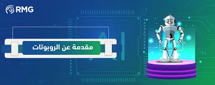
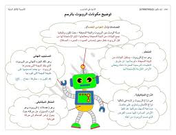

جدول المحتويات
مقدمة عن الروبوتات
مرحبًا بك في عالم الروبوتات! هذه المقدمة تشرح ما هي الروبوتات، أصولها، وكيف أصبحت جزءًا متزايدًا من المجتمع الحديث.
الروبوتات هي آلات قابلة للبرمجة عن طريق الحاسوب، وقادرة على تنفيذ سلسلة معقدة من الإجراءات تلقائيًا. يمكن أن تُدار من خلال تحكم خارجي أو تحتوي على وحدة تحكم داخلية.
ما مدى فائدة الروبوتات اليوم؟
أصبحت الروبوتات ضرورية في العديد من المجالات بسبب قدرتها على أداء المهام بكفاءة ودقة عالية.
في التصنيع:
تُستخدم الروبوتات بشكل واسع في خطوط الإنتاج لتنفيذ مهام مثل اللحام، الطلاء، والتغليف، مما يزيد من السرعة والتناسق.
في الرعاية الصحية:
تساعد الروبوتات الجراحين في العمليات الدقيقة، وتُستخدم في رعاية المرضى، والتعقيم، وتوصيل الإمدادات.
في الاستكشاف:
تُعد الروبوتات أساسية في استكشاف البيئات الخطرة أو التي لا يمكن الوصول إليها، مثل الفضاء أو أعماق المحيط.
إيجابيات وسلبيات الروبوتات
تقييم الروبوتات يتطلب النظر في الفوائد التي تقدمها وكذلك التحديات المحتملة.
الإيجابيات:
- زيادة الكفاءة والإنتاجية: يمكن للروبوتات العمل دون توقف أو تعب.
- تحسين الدقة والانضباط: تنفذ المهام المتكررة بثبات عالٍ.
- تعزيز السلامة: يمكنها التعامل مع المهام الخطرة وحماية العمال.
- توفير التكاليف على المدى الطويل: رغم التكلفة الأولية العالية، تقلل من تكاليف العمالة والهدر.
السلبيات:
- احتمالية فقدان الوظائف: الأتمتة قد تقلل من الحاجة للقوى العاملة البشرية.
- تكلفة استثمار عالية: شراء وتركيب وبرمجة الروبوتات مكلف.
- ضعف التكيف: الروبوتات مصممة لمهام محددة وقد تفشل في التعامل مع المواقف غير المتوقعة.
- تحتاج إلى صيانة وخبرات: تحتاج إلى مهارات خاصة للصيانة والتشغيل.
المكونات الأساسية للروبوت
بالرغم من اختلاف تصميمات الروبوتات ووظائفها، إلا أن هناك مكونات أساسية مشتركة بينها.
- مصدر الطاقة: يزود الروبوت بالطاقة (مثل البطاريات، الطاقة الشمسية، الطاقة الهيدروليكية).
- المشغلات: بمثابة "العضلات" التي تسمح بالحركة (مثل المحركات، الأسطوانات الهوائية).
- المستشعرات: تمكن الروبوت من إدراك البيئة (مثل الكاميرات، مستشعرات اللمس، مستشعرات القرب).
- وحدة التحكم: "عقل" الروبوت، يعالج البيانات ويصدر الأوامر (مثل الميكروكنترولر أو الحاسوب).
- الأداة النهائية: أداة في نهاية الذراع الآلية تُستخدم للتفاعل مع البيئة (مثل الملقط، آلة اللحام، الكاميرا).